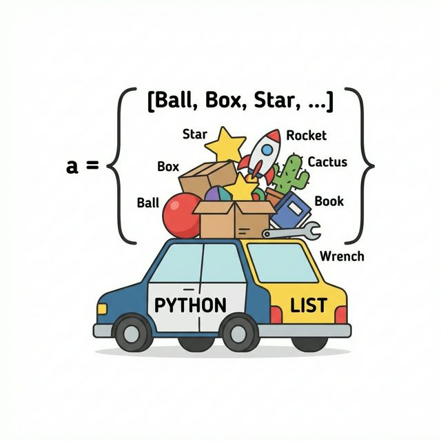
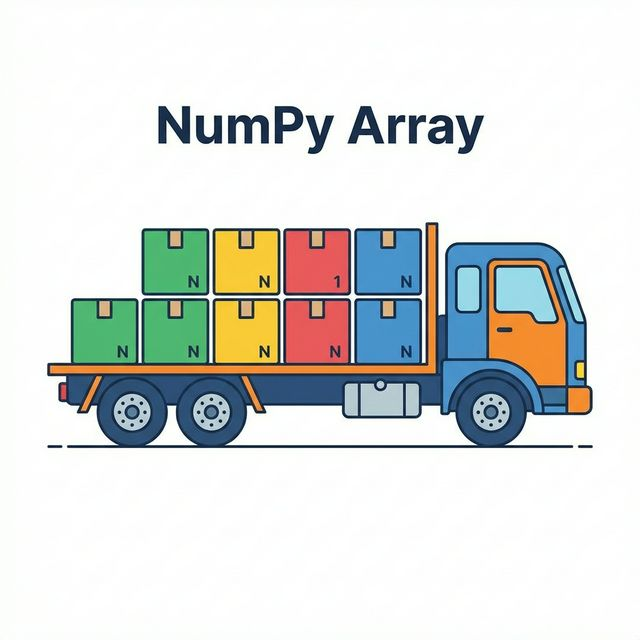

3주차 1강: Numpy란 무엇인가? (Introduction)
학습목표: 대용량 데이터 처리를 위한 Numpy의 필요성을 이해하고, 리스트와 배열의 차이점 및 벡터/행렬의 개념을 시각적으로 학습합니다.
3.1.1. 파이썬 리스트 vs 넘파이 배열 (List vs Array)
Numpy (Numerical Python): 파이썬에서 과학 계산을 위해 만들어진 핵심 라이브러리입니다.
왜 굳이 numpy array를 또 배워야 할까요?
우리는 이미 파이썬 list를 배웠습니다.
그 이유를 이사짐 나르기로 비유해 봅니다.
-
파이썬 리스트: 승용차입니다.
사람도 태우고, 짐도 싣고, 반려견도 태울 수 있습니다(다양한 자료형 허용). 하지만 짐을 많이 싣기엔 느리고 비효율적입니다.
[그림: 파이썬 리스트 - 승용차]

-
넘파이 배열: 대형 화물 트럭입니다.
오직 “규격화된 화물(동일한 자료형)”만 실을 수 있지만, 엄청나게 많은 양을 매우 빠르게 나를 수 있습니다.
[그림: 넘파이 배열 - 화물 트럭]

3.1.1.2. 구조적 차이와 속도 (Memory Layout)
기계(컴퓨터) 입장에서는 데이터가 저장된 방식이 속도를 결정합니다. 복잡한 그림 대신, 간단한 모형으로 비교해 봅시다.
[그림 1] 파이썬 리스트의 구조 (Data Scatter)
데이터가 메모리 여기저기에 흩어져 있습니다.
graph LR
List[파이썬 리스트] --주소--> Item1((정수 1))
List --주소--> Item2((정수 2))
List --주소--> Item3((정수 3))
style List fill:#f9f,stroke:#333
style Item1 fill:#fff,stroke:#333,stroke-dasharray: 5 5
style Item2 fill:#fff,stroke:#333,stroke-dasharray: 5 5
style Item3 fill:#fff,stroke:#333,stroke-dasharray: 5 5
- 비효율: 데이터를 찾으러 여기저기 이동해야 합니다. (Pointer Chasing)
- 유연함: 아무거나 담을 수 있습니다.
[그림 2] 넘파이 배열의 구조 (Continuous Memory)
데이터가 한 곳에 빈틈없이 붙어 있습니다.
graph LR
Array[넘파이 배열] --> Block["1 | 2 | 3 | 4 | 5"]
style Array fill:#ccf,stroke:#333
style Block fill:#cfc,stroke:#333
- 고효율: 한 번에 덩어리째 읽어서 계산합니다. (Cache Friendly)
- 고속: 이것이 바로 벡터화 연산(Vectorization)의 비결입니다.
3.1.3. 설치 및 불러오기
Matplotlib과 마찬가지로 설치 후 np라는 별칭으로 불러옵니다.
pip install numpy
import numpy as np
print(np.__version__) # 버전 확인
이제 우리는 슈퍼카(Numpy)의 시동을 걸 준비가 되었습니다. 화려한 데이터 핸들링 기술을 익혀봅시다. 🏎️
정리 (Summary)
이 강의에서 배운 핵심 내용을 요약해 봅시다.
- [핵심 1]: Numpy는 대량의 데이터를 빠르게 처리하는 수치 계산 라이브러리입니다. (C언어 기반)
- [핵심 2]: 파이썬 리스트보다 메모리를 적게 쓰고 속도가 훨씬 빠릅니다.
- [핵심 3]: 모든 요소가 같은 데이터 타입(dtype)이어야 한다는 규칙이 있습니다.